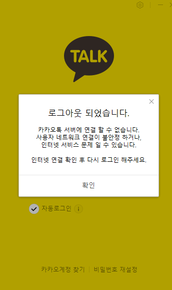

이미지 업로드 테스트
안녕하세요.

- JAM Stack 개념
- SSG 툴
- Github pages 사용법
- HUGO를 이용한 블로그 생성
- Github 계정 생성 및 사용
- Markdown 사용법
- VSCode Markdown 에디터 활용법
- Git submodule 이해 - 최형근
- Github Actions 이해
정적 사이트 생성기(Static Site Generator, SSG)는 웹 사이트를 만들기 위한 도구입니다. SSG는 미리 컴파일된 정적 파일을 생성하여 서버에 배포됩니다. 이러한 정적 파일은 서버에서 동적으로 생성되는 페이지와 달리, 이미 미리 준비된 파일로 구성되어 있습니다.
SSG의 주요 장점은 빠른 페이지 로딩 속도와 보안이 우수하다는 점입니다. 정적 파일은 서버에서 동적으로 생성되지 않기 때문에, 클라이언트의 요청에 즉시 응답할 수 있습니다. 이로 인해 페이지 로딩 속도가 향상되고, 사용자 경험이 향상됩니다. 또한, 정적 파일은 서버 취약점에 대한 공격 범위가 제한되어 있어 보안적인 이점이 있습니다.
SSG는 다양한 템플릿 언어를 지원하며, 개발자들은 편리하게 웹 페이지를 구성할 수 있습니다. 또한, SSG는 다양한 플러그인과 확장 기능을 제공하여 사용자 정의 가능성을 높여줍니다.
정적 사이트 생성기는 개발자들 사이에서 인기가 높아지고 있으며, 다양한 프로젝트에 활용되고 있습니다. 웹 사이트의 구축과 유지보수를 간편하게 만들어주는 SSG는 현대적이고 효율적인 웹 개발 도구로 평가받고 있습니다.
휴고
####- Go로 작성된 정적 사이트 생성기
- 아파치 라이선스 2.0
!https://upload.wikimedia.org/wikipedia/commons/thumb/a/af/Logo_of_Hugo_the_static_website_generator.svg/langko-220px-Logo_of_Hugo_the_static_website_generator.svg.png
jekyll 제킬, 지킬
- 정적 사이트 생성기
- 블로그 소프트웨어
- 작성언어: Ruby
- MIT 라이선스
!https://upload.wikimedia.org/wikipedia/commons/thumb/4/42/Jekyll_%28software%29_Logo.png/200px-Jekyll_%28software%29_Logo.png
Gatsby는 JAM Stack을 활용한 정적 사이트 생성기입니다. Gatsby를 시작하기 전에 꼭 알아야 할 필수 개념인 JAM Stack에 대해 먼저 알아보겠습니다.
JAM Stack(JavaScript, API, Markup Stack)은 JavaScript, API, HTML이나 CSS 등을 칭하는 Markup으로 이루어진 웹 구성 방법입니다.
JAM Stack 공식 홈페이지에서는 이렇게 설명하고 있습니다.
Jamstack is an architecture designed to make the web faster, more secure, and easier to scale.
JAM Stack은 어떻게 이런 이점을 가질 수 있는지 홈페이지에 있는 설명을 통해 정리했습니다.